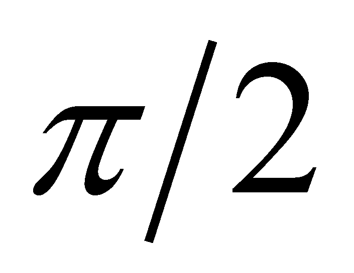
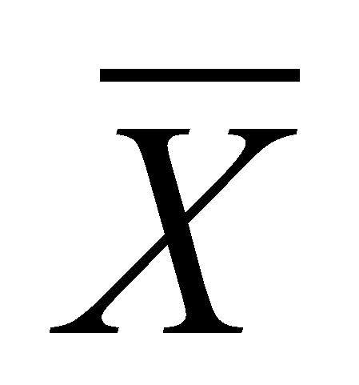
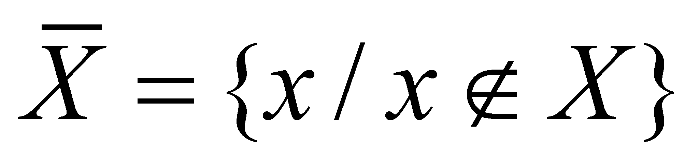
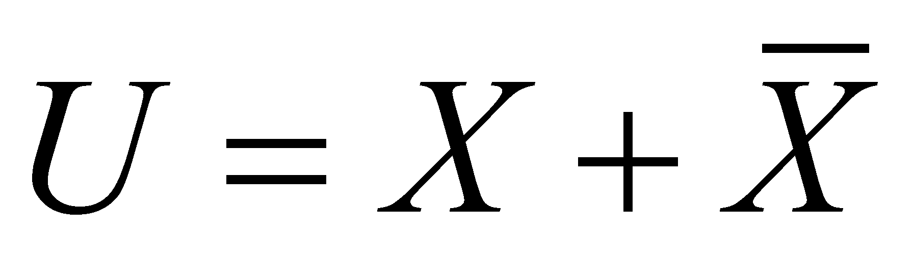
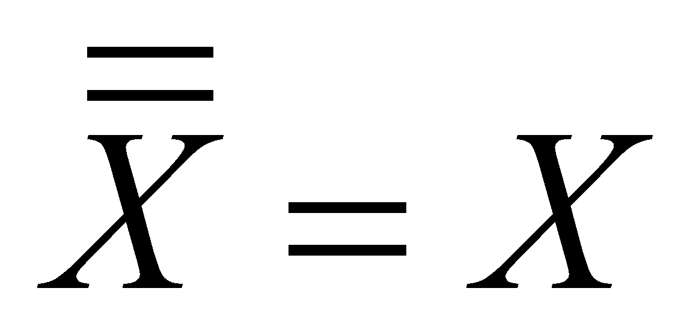

|
|
|
For being able to conceive an objectual definition of a term, we shall start with an objectual analysis (synonym - systemic) of the definitions assigned to this word by dictionaries. The objectual approach implies the extraction of the common component from a set of abstract objects, this component becoming the class model for the generic abstract object of this set (notion). According to the Dictionary of General Mathematics91 we find out that:
The complement term comes from the latin word complementum (completeness, replenishment);
These are few excerpts from The Encyclopedic Dictionary92:
Complementary: what is added to something in order to replenish it;
The complement of a number with n digits written within a numerical system with the base q is the difference between qn and that number;
Two angles are complementary if their sum is ;
The complementary of a set A against another set B is the set of the elements which do not belong to A but belong to B;
Two colors which belong to the visible spectrum are complementary if when they are superposed, white color occurs;
At last, The Dictionary of Logics93 issues the following definition:
Complementary: “operation which, by starting from a set X, makes possible the creation of another set (nonX or C X) named complementary set and defined as follows: . It is assumed that X is taken from an universe U, so that (the operator [+] stands for exclusion in this context). By means of c., we divide the universe in two classes (dichotomy). C. has the property of involution (), and the intersection between and X is void”.
Comment X.5.1.1: By using specific terms for this paper, the operator [+] symbolizes the adjacent-disjoint union of the two sets, so that the existence domain of the universe U to be equal with the sum of the domains belonging to the sets X and . It is clear that the disjunction relation implies the exclusion as well.
Taking into account the seven definitions which were previously presented, now, we shall extract the common components with which we shall design the generic model of the abstract object complementarity. First, we must notice that this complementarity involves many relations between three abstract objects (an object which is considered as whole and the two sections in which it is divided), which are relations underlined at the points 3, 4, 5, 6 and mostly 7. These relations determine the bipartition (splitting in two parts, the dichotomy) of a whole object named base, namely, other two objects which claim the internal domain of this base.
Comment X.5.1.2: The base term for the existence range of the complementarity relation must not be mistaken with the base term of the numbering system which may be found at the definition from the point 3. In this case (from the point 3), the complementarity base is represented by the term qn , whereas the base of the numbering system is q. In case of the definition from the point 7, the base of complementarity corresponds with the universe U.
Each of the two objects which were generated by means of the base splitting is the complement of the other against the common base, the union of their individual domains being obviously equal by definition with the internal domain of the base.
Therefore, the complementarity is a complex relation (decomposable) deployed between two abstract objects whose internal domains represent a bipartition of another object (base), and the following elementary relations with simultaneous existence belong to this relation:
Bipartition relation - union (sum) of the internal domains of the two complementary objects is equal with the domain of the base object;
Disjunction relation - intersection (conjunction) of the two domains is void;
The adjacency relation - there is a common boundary between the two domains.
The disjunction relation between the internal domains of the two complementary objects involves the exclusion of the attribution of a singular property value to both objects. On the other hand, one may observe that an object with a specific qualitative property (number, angle, wave length, set of objects belonging to the same class etc.) distributed on its unitary support domain (base) is divided in two abstract objects which own the same property, objects which are assigned with different qualitative attributes (for instance, positive and negative), although the single difference between them is only the support domain on which this unique property is distributed (complementary domains generated as a result of the base bipartition).
Comment X.5.1.3: There is a special case of complementarity which apparently does not comply with the definitions stated by the objectual philosophy, that is the complementarity with a null base. As it was mentioned in chapters 1…9 of the present paper, an abstract object with a null existential attribute means that it does not exist. In case of a null base, it seems that no complementariness is able to exist either. However, if there are two qualitative properties with non-zero existential attribute, belonging to two different objects which are able to form a complex object but which properties are no longer existent in case of the complex object (as if they were mutually cancelled), those properties are also considered as complementary. For instance, in case of EP with opposite charges (a proton and an electron), the complex object from the two EPs (e.g.: the hydrogen atom) does not have charge attributes in the outside. In this case, the complementariness base is represented by the complex object which has null properties in terms of the electric charge.
91 Dicþionar de Matematici Generale - Editura Enciclopedicã - 1974
92 Dicþionar Enciclopedic - Editura Enciclopedicã - 1993…1999
93 Dicþionar de Logicã - Editura ªtiinþificã ºi Enciclopedicã - 1985
Copyright © 2006-2011 Aurel Rusu. All rights reserved.